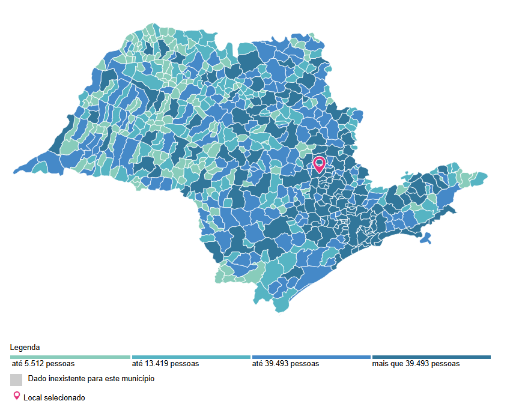

População
Em 2022, a população era de 291.869 habitantes com a estimação de 300.728 em 2024 e a densidade demográfica era de 502,61 habitantes por quilômetro quadrado. Na comparação com outros municípios do estado, ficava nas posições 26 e 60 de 645. Já na comparação com municípios de todo o país, ficava nas posições 94 e 173 de 5570.
Trabalho e Rendimento
| Salário médio mensal dos trabalhadores formais [2022] | 2,8 salários mínimos |
| Pessoal ocupado [2022] | 114.933 pessoas |
| População ocupada [2022] | 114.933 pessoas |
| População ocupada [2022] | 39,38 % |
| Percentual da população com rendimento nominal mensal per capita de até 1/2 salário mínimo [2010] | 30,5 % |
Educação
| Taxa de escolarização de 6 a 14 anos de idade [2010] | 97,7 % |
| IDEB – Anos iniciais do ensino fundamental (Rede pública) [2023] | 7,0 |
| IDEB – Anos finais do ensino fundamental (Rede pública) [2023] | 5,6 |